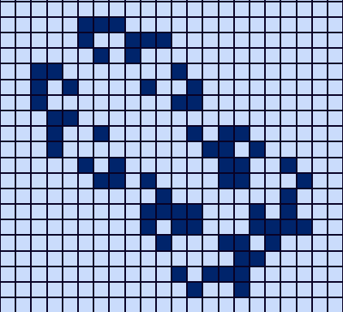

Life's Mosaic, or simply "Life," is a cellular automaton devised by British mathematician John Horton Conway in 1970. It is a zero-player game, meaning its evolution is determined by its initial state, requiring no further input. Players interact with the game by creating an initial configuration and observing how it evolves. The game is Turing complete and can simulate a universal constructor or any other Turing machine.
The universe of the Game of Life is an infinite, two-dimensional orthogonal grid of square cells, Each cell is in one of two possible states, ALIVE or DEAD. Every cell interacts with its eight neighbors, which are the cells that are horizontally, vertically, or diagonally adjacent.
The first generation is created by applying the above rules simultaneously to every cell in the seed, alive or dead; births and deaths occur simultaneously, and the discrete moment at which this happens is sometimes called a tick. Each generation is a pure function of the preceding one.
| Button | What they do |
|---|---|
| Starts the animation after you've set the initial pattern | |
 |
Pauses the animation |

|
Increases the speed of the animation |
|
|
Decreases the speed of the animation |
| Clear | Clears the grid on click, only if the game is not animating at that moment |
| Random | Randomly initializes the grid with initial randomness as 20% |
The glider is the smallest, most common, and first-discovered spaceship in Game of Life. It travels diagonally across the grid. Gliders are important because they are easily produced (by glider guns and rakes), can be collided with each other to form more complicated patterns, and can be used to transmit information over long distances.

The big glider was found by Dean Hickerson in December 1989 and was the first known diagonal spaceship other than the glider. Two gliders can be temporarily seen at the front of the ship; these do not stay gliders but still move like them.
The Gosper glider gun is the first known gun, and indeed the first known finite pattern with unbounded growth, found by Bill Gosper in November 1970. It consists of two queen bee shuttles stabilized by two blocks.

Life's Mosaic Life is a fascinating exploration of life, death, and the rules that govern them. Despite its simplicity, it can lead to complex and beautiful patterns.Life's Mosaic offers a unique way to explore the unpredictable beauty of life itself.